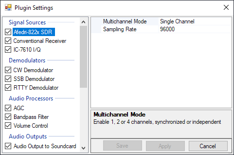

Configuration
Virtually all functions in Ham Cockpit are implemented in the plugins. To configure the program, just configure the settings of the installed plugins.
Click on the View / Plugin Settings command in the menu to open the Plugin Settings dialog.

The left panel of the Plugin Settings dialog shows all installed plugins. Click on the plugin to select it for configuration and edit its settings on the right panel. Click on the Save button to save all changes and close the dialog. The Apply button saves the changes but does not close the dialog.
To reset the setting to its default value, right-click on the setting name and click on Reset in the popup menu.
Click on the checkbox next to each plugin name to enable or disable the plugin. Another way to disable a plugin permanently is to simply delete its DLL file from the installation folder.
For some plugin types the order is important. For example, Audio Processors are applied to the signals in the same order in which they appear in the Plugin Settings dialog. Drag and drop such plugins to change their order.
Warning
Some of the plugins that come with Ham Cockpit perform audio input and output, control the radio via a USB or RS-232 port, or work with other non-standard hardware in various ways. Be sure to configure them properly before you start using them.